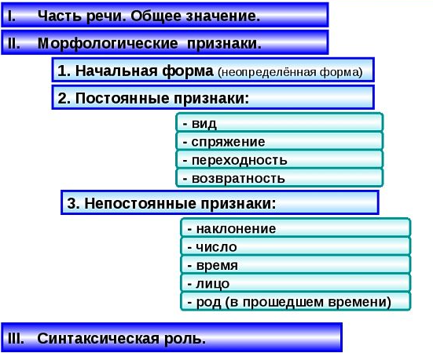

Морфологический разбор
Источник изображения
Глаголы, как и другие части речи, обладают множеством морфологических признаков. При осуществылении морфологического разбора необходимо сначала определить часть речи (в данном случае — глагол), общее значение (действие), после чего необходимо найти неопределённую форму (инфинитив). Например, рассказал mdash; рассказать.
После этого нужно определить признаки. Постоянными признаками являются:
- вид (совершенный/несовершенный)
- спряжение (первое или второе)
- переходность (переходный или непереходный)
- возвратность (возвратный или нет)
- наклонение (изъявительное, условное, повелительное)
- число (единственное/множественное)
- время (прошедшее, настоящее или будущее)
- лицо (первое, второе или третье)
- род (мужской, женский или средний, можно определить только для глаголов прошедшего времени в единственном числе)
Спряжение глаголов
| Лицо | I спряжение | II спряжение | ||
|---|---|---|---|---|
| ед.ч. | мн.ч. | ед.ч. | мн.ч. | |
| 1 л. | пишу лаю |
пишем лаем |
гоню пилю |
гоним пилим |
| 2 л. | пишешь лаешь |
пишете лаете |
гонишь пилишь |
гоните пилите |
| 3 л. | пишет лает |
пишут лают |
гонит пилит |
гонят пилят |